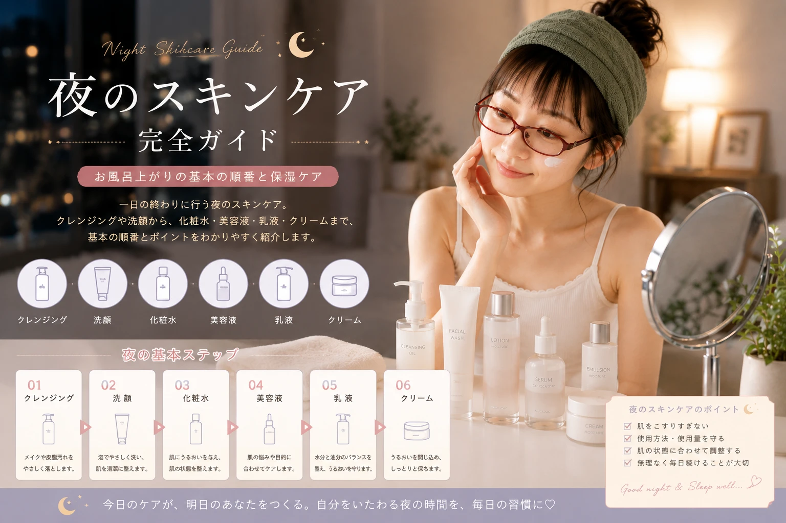

乾燥が気になる
洗顔後の肌の状態や、 保湿アイテムの使い方などを見直してみましょう。
CHECK
保湿ケアを見直す

キレイは、日常の積み重ね。
一日の終わりに行う夜のスキンケア。 クレンジングや洗顔から、 化粧水・美容液・乳液・クリームまで、 基本の順番とポイントを初心者にもわかりやすく紹介します。

NIGHT SKINCARE
夜は、メイクや日中の汚れを落として、 肌を清潔に整える大切な時間。 さらに、入浴後などは乾燥しやすくなることもあるため、 自分の肌状態に合わせて保湿ケアを行うことがポイントです。
「何から使えばいいかわからない」 「美容液はどのタイミング？」 「乳液とクリームは両方必要？」 そんな疑問を持っている人に向けて、 夜のスキンケアの基本を順番に紹介します。
夜のスキンケアでは、 一日の間に肌についたメイクや汚れを落とし、 肌を清潔に整えることが基本です。
その後に化粧水や乳液、 クリームなどを使って、 肌の状態に合わせた保湿ケアを行います。

一日の終わりに肌をやさしく整える夜のスキンケア
夜のスキンケアは、 「たくさんのアイテムを使うこと」よりも、 自分の肌に合ったケアを無理なく続けることを 意識しましょう。
夜のスキンケアは、 基本的には「落とす → 整える → 保湿する」 という流れで考えるとわかりやすくなります。
メイクをしている場合は、 クレンジングでメイクを落とします。
肌に残った汚れなどを洗い、 清潔な状態に整えます。
洗顔後の肌を整えます。
必要に応じて美容液を取り入れます。
肌にうるおいを与え、 保湿ケアを行います。
必要に応じてクリームを使い、 夜の保湿ケアを仕上げます。

夜のスキンケアは基本の順番を決めておくと続けやすい
メイクをしている日は、 クレンジングでメイクを落とすことから始めます。
クレンジングをするときは、 肌を強くこすらないように注意しながら、 使用する商品の方法に従って丁寧に行いましょう。

メイクをした日はクレンジングから夜のケアをスタート
クレンジングの後は、 洗顔料を使って肌を清潔に整えます。
洗顔料はしっかり泡立て、 肌を強くこすらないように やさしく洗うことを意識しましょう。

夜の洗顔は肌をこすりすぎないようにやさしく
洗顔後は肌が乾燥しやすく感じることもあるため、 洗顔後のスキンケアを長時間放置せず、 自分に合った保湿ケアにつなげましょう。
洗顔が終わったら、 化粧水などを使って肌を整えます。 夜は一日の終わりだからこそ、 自分の肌の状態を確認しながら 無理のないスキンケアを続けることが大切です。
化粧水を使うときは、 商品に記載されている使用方法を確認し、 手のひらなどを使ってやさしくなじませましょう。

洗顔後は化粧水などで肌を整える
化粧水は「たくさん使えばよい」と考えるのではなく、 使用する商品の方法を確認し、 自分の肌に合った使い方を続けましょう。
化粧水の後は、 必要に応じて美容液を取り入れます。
美容液にはさまざまな種類があるため、 目的や肌の状態、 使用感などを確認して選ぶことがポイントです。

美容液は肌の状態や目的に合わせて取り入れる
化粧水や美容液を使った後は、 乳液などを使って保湿ケアを行います。
乳液は肌の状態や使用する商品によって 使い方が異なるため、 パッケージなどに記載されている 使用方法を確認しましょう。

乳液などを使って夜の保湿ケアを行う
乳液を使う量や使い方は商品によって異なります。 「これくらい」と決めつけず、 商品の使用方法を確認して使いましょう。
肌の乾燥が気になる場合などは、 乳液に加えてクリームなどを取り入れる方法もあります。
ただし、 すべての人が乳液とクリームを 必ず両方使う必要があるとは限りません。 肌の状態や使用する商品の特徴を確認しながら、 自分に合った保湿方法を選びましょう。

肌の状態に合わせてクリームなどを取り入れる
お風呂上がりは、 洗顔や入浴によって肌の状態が変化しているため、 自分の肌の様子を確認しながら スキンケアを行いましょう。
特に忙しい夜は、 「お風呂に入った後、そのまま寝てしまう」 ということもあります。 そこで、浴室を出た後に使うアイテムを あらかじめまとめておくと、 夜のケアを習慣化しやすくなります。
お風呂上がりはスキンケアを習慣にしやすいタイミング
洗顔・入浴を終える
化粧水などで肌を整える
必要に応じて美容液を使う
乳液やクリームなどで保湿する
夜のスキンケアは、 毎日同じアイテムを同じ量で使い続ければよいとは限りません。 季節や肌の状態、 その日のメイクや生活スタイルに合わせて、 無理なく調整していきましょう。
クレンジングや洗顔、 スキンケアをするときは、 肌を強くこすらないように やさしく扱いましょう。
乾燥やベタつきなど、 その日の肌の状態を確認しながら 使用するアイテムを考えましょう。
化粧品は商品によって 使用方法や使用量が異なります。 パッケージなどを確認して使用しましょう。
アイテムを増やしすぎず、 毎日続けやすいシンプルなケアから 始めるのもおすすめです。
夜のスキンケアは、 一年を通してまったく同じにする必要はありません。 季節や室内環境によって、 肌の乾燥やベタつきが気になることもあるため、 その日の肌状態を確認しながら ケアを調整していきましょう。

季節や肌の状態に合わせてケアを調整する
季節の変化で肌の状態が変わりやすい時期。 いつものケアを続けながら、 肌の様子を確認しましょう。
ベタつきが気になりやすい季節。 使用感なども確認しながら、 無理なく保湿ケアを続けましょう。
気温や湿度の変化を感じやすい時期。 肌の乾燥が気になったら、 保湿方法を見直してみましょう。
乾燥が気になりやすい季節。 肌の状態を見ながら、 保湿アイテムを使い分けましょう。
夜のスキンケアをしていても、 肌の乾燥が気になることがあります。 そんなときは、 使用しているアイテムや使用方法を一度見直し、 肌の状態に合ったケアを考えてみましょう。

乾燥が気になるときは保湿ケアを見直す
肌の状態が気になる場合は、 アイテムを一度にたくさん追加するのではなく、 現在のスキンケアを一つずつ見直すことも 選択肢のひとつです。
仕事や学校などで疲れている日は、 いつものケアをすべて丁寧に行うのが 難しいこともあります。
そんな日は、 「毎日完璧にやらなければ」と考えるより、 自分が無理なく続けられるルーティンを 作っておくことが大切です。

忙しい日も続けやすいシンプルな夜のスキンケア
メイクをしている日は クレンジング
洗顔で肌を清潔に整える
化粧水などで肌を整える
乳液やクリームなどで保湿
夜のスキンケアは、 アイテム選びだけでなく、 毎日の使い方も大切です。 何気なく行っている習慣を見直してみましょう。
クレンジング・洗顔・スキンケアのときに、 肌を強くこすらないようにしましょう。
化粧品は商品ごとに使用量が異なります。 パッケージなどに記載された方法を確認しましょう。
肌に異常が現れた場合は、 使用を中止するなど適切に対応しましょう。
たくさん使うことだけを目的にせず、 自分に必要なケアをシンプルに考えることも大切です。
スキンケアは一日だけ頑張るよりも、 自分の生活に無理なく取り入れることが大切です。
「お風呂から出たらスキンケアをする」 「洗面台に必要なアイテムをまとめておく」など、 毎日の行動とセットにすると 習慣にしやすくなります。

毎日の生活に夜のスキンケアを取り入れる
毎日使うアイテムは、 取り出しやすい場所にまとめておきましょう。
「洗顔 → 化粧水 → 保湿」のように 自分の基本ルーティンを決めておくと 迷いにくくなります。
アイテムを増やすことより、 無理なく続けられることを優先しましょう。
季節や体調などによって 肌状態が変化することもあります。 その日の状態を確認しましょう。
毎日すべて完璧にする必要はありません。 自分が続けやすい夜のルーティンを見つけてみましょう。
夜のスキンケアは、 一日の終わりに肌を整える大切な時間。 たくさんのアイテムを使うことだけを目標にせず、 自分の肌状態や生活スタイルに合わせて、 無理なく続けられる方法を見つけましょう。

自分に合った夜のスキンケアを習慣に
スキンケアは、 すべての人が同じ方法を取り入れればよいわけではありません。 乾燥やベタつきなど、 その日の肌の状態を確認しながら 使用するアイテムやケア方法を考えてみましょう。
洗顔後の肌の状態や、 保湿アイテムの使い方などを見直してみましょう。
使用するアイテムの量や使用感などを確認し、 自分に合った方法を探してみましょう。
顔全体を同じ状態と考えず、 気になる部分を確認しながら ケアを調整しましょう。
現在のケアを続けながら、 季節や生活環境による変化にも 気を配ってみましょう。
スキンケアアイテムを選ぶときは、 人気や価格だけではなく、 自分の肌状態や使用感、 続けやすさなども確認してみましょう。

自分の肌状態や使用感を考えてアイテムを選ぶ
今の肌で気になっていることを確認しましょう。
毎日使いやすいテクスチャーかどうかも 選ぶポイントです。
無理なく購入・使用を続けられるかも 考えてみましょう。
使用順序・使用量・使用頻度などを 商品ごとに確認しましょう。
スキンケアを始めたばかりなら、 最初からたくさんのアイテムを揃える必要はありません。
まずは夜の基本的な流れを覚えて、 自分の肌に合うアイテムを 少しずつ見つけていく方法もあります。
メイクをしている場合に行う
肌を清潔に整える
化粧水・乳液などを使って整える
※使用するアイテムや順番は、 商品に記載されている使用方法も確認してください。
夜のスキンケアで大切なのは、 アイテムの数を増やすことだけではありません。
肌をこすりすぎないこと、 商品の使用方法を守ること、 自分の肌状態を確認すること、 そして無理なく続けること。 こうした基本を意識しながら、 自分に合ったルーティンを作っていきましょう。
肌を強くこすらず、 やさしく扱いましょう。
商品の使用方法や 使用量を確認しましょう。
肌状態や季節に合わせて ケアを調整しましょう。
毎日続けやすい方法を 見つけましょう。
一日の終わりに、 自分の肌と向き合う時間を。 無理なく続けられる あなたのナイトルーティンを 見つけてみてください。
Pro Pocket Beauty
本記事はスキンケアに関する一般的な情報を わかりやすく紹介することを目的としています。 化粧品を使用する際は、 各商品の使用方法・注意事項を確認してください。
肌に異常が現れた場合は使用を中止し、 必要に応じて医療機関などへ相談してください。